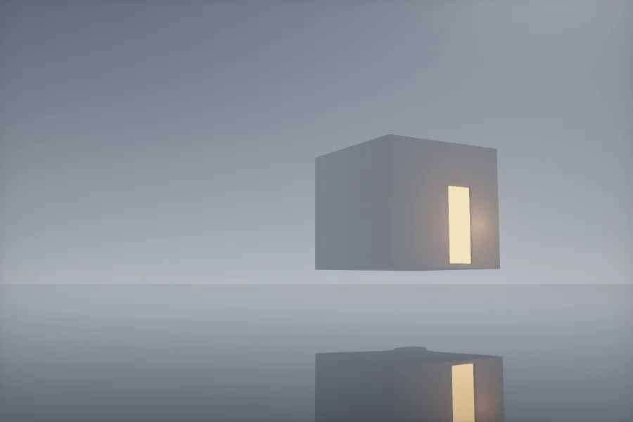
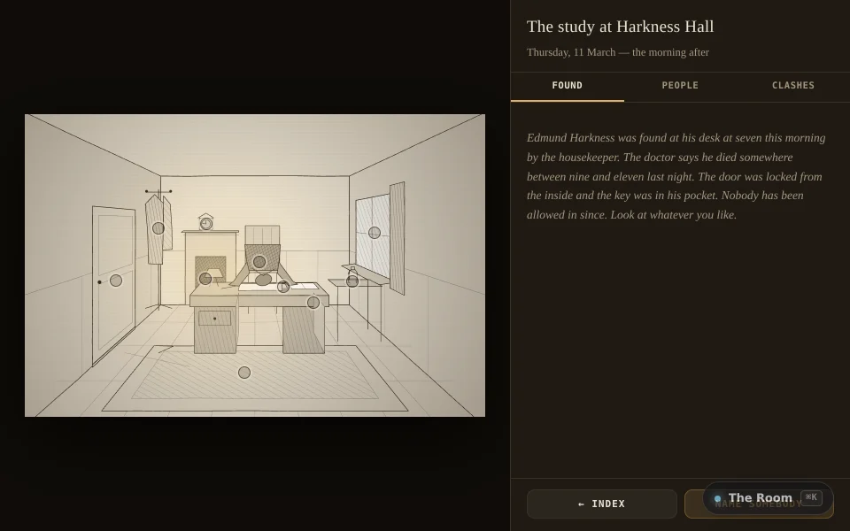

fiction · about 10 min · The Night Isles
The Room
Edmund Harkness is dead at his desk and the door was locked from inside. Look at nineteen things, question four people, then name somebody.
The problem
Most mystery games are multiple choice in disguise; here you have to find the contradiction yourself.
Evidence
The notebook works out for itself which two statements cannot both be true. Read its tests

What it does
- Nineteen things to look at and four people to question
- A notebook that finds contradictions by itself
- No multiple-choice question anywhere
The most interesting decision
Statements are evidence
Testimony is a fact about a claim, exactly like a ring in the dust, so the same three lines that find any other clash find one between what a witness said and what the room shows.
Built with
- Contradiction engine
- Nineteen clues, four witnesses
- Canvas 2D